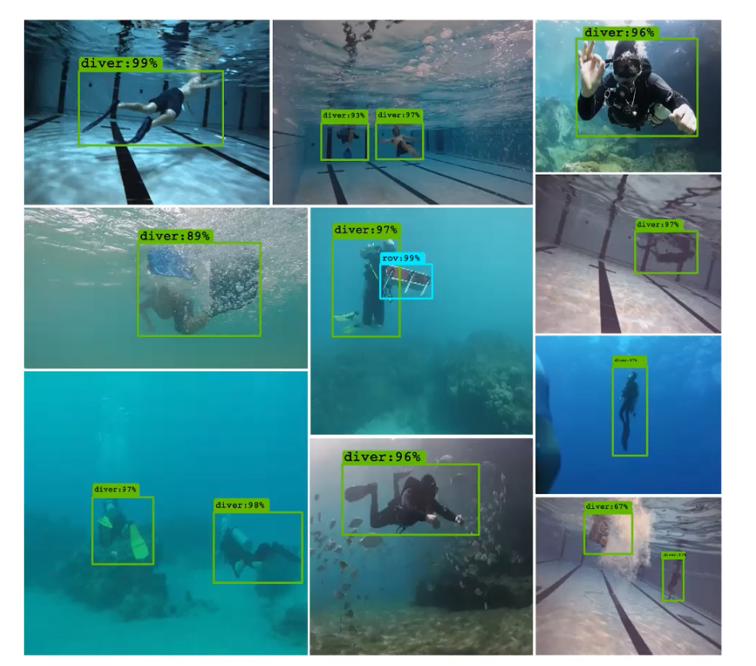
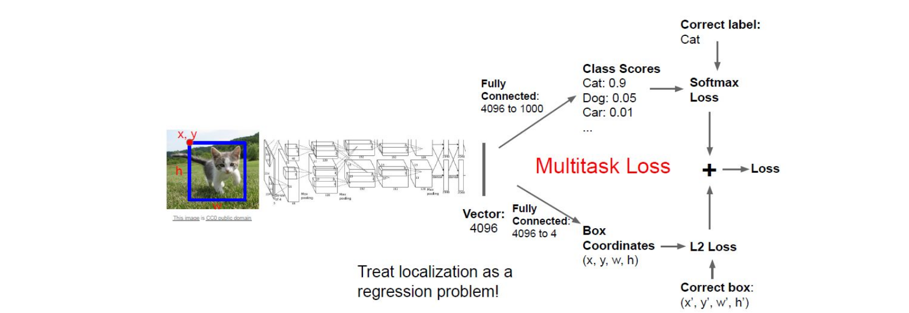
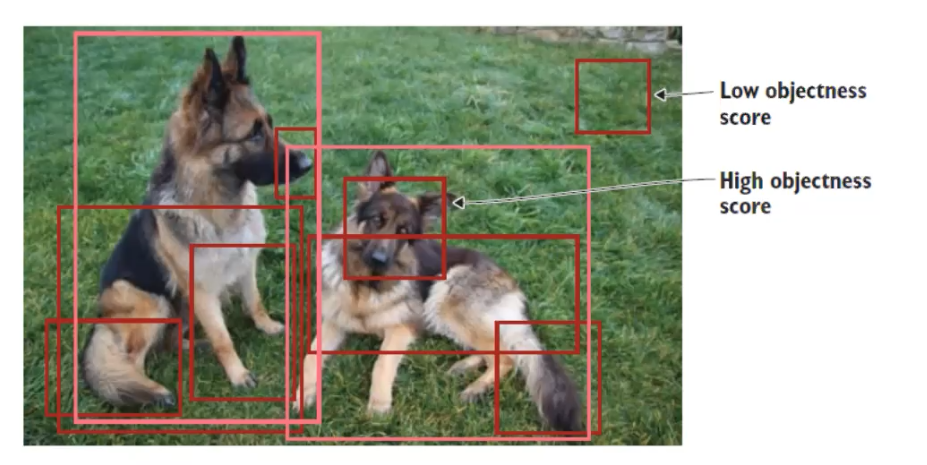
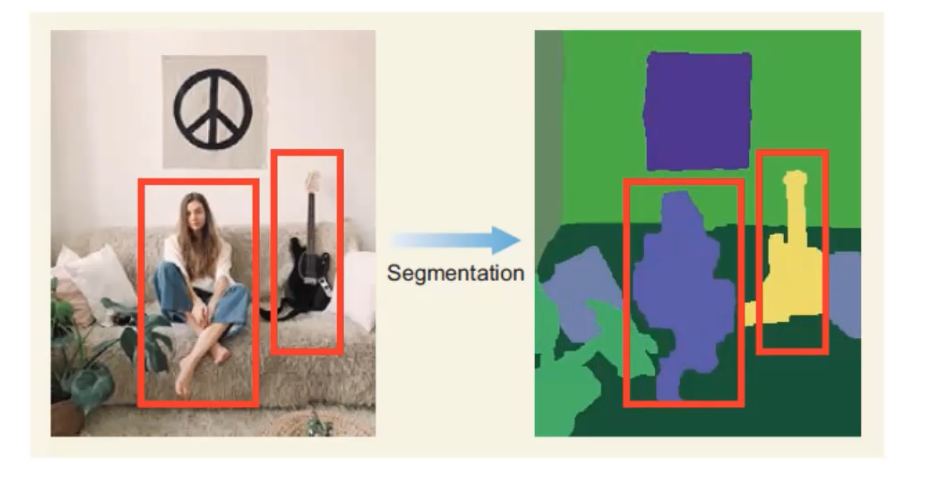
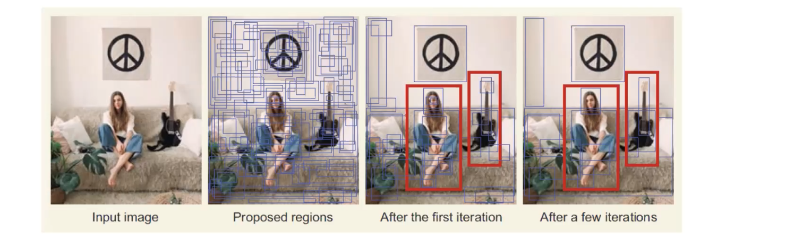
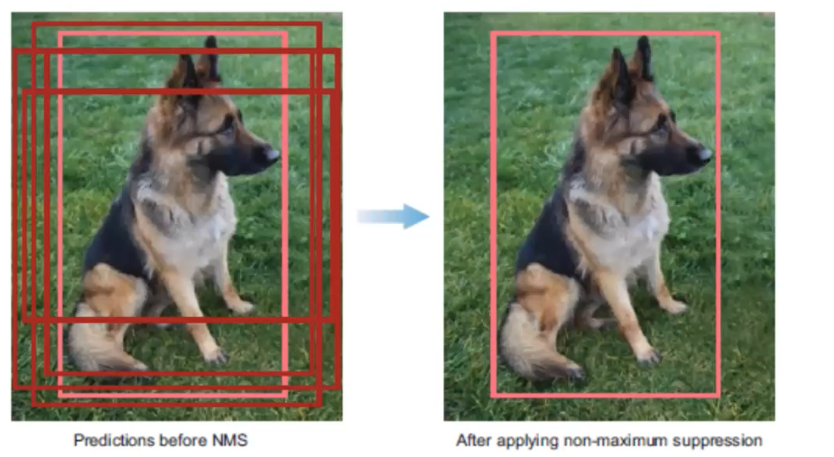
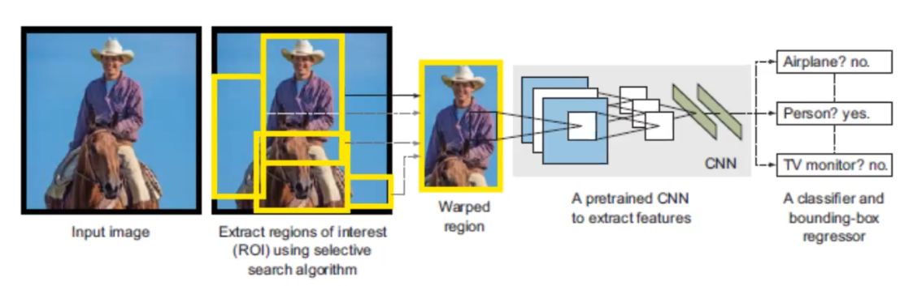
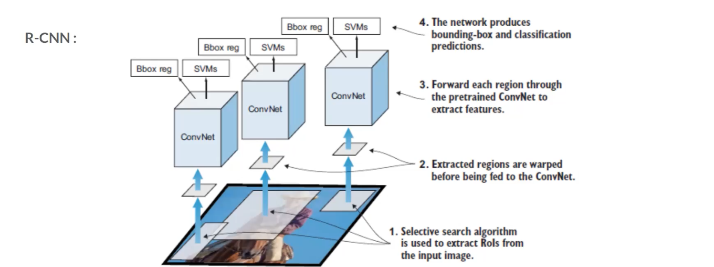
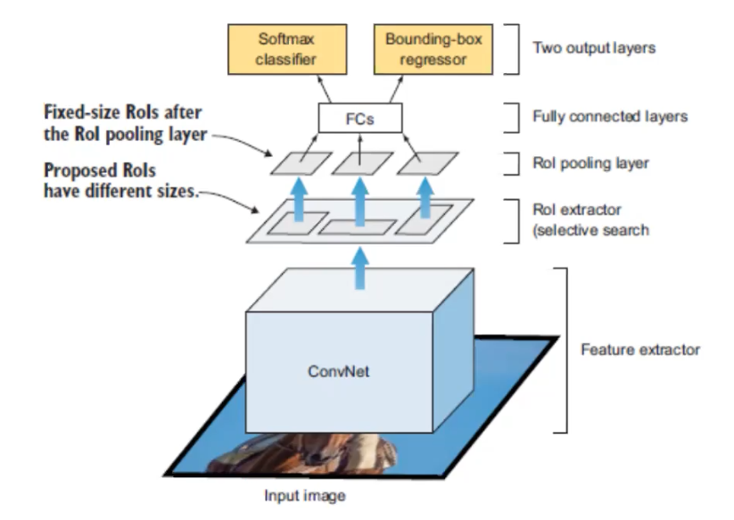
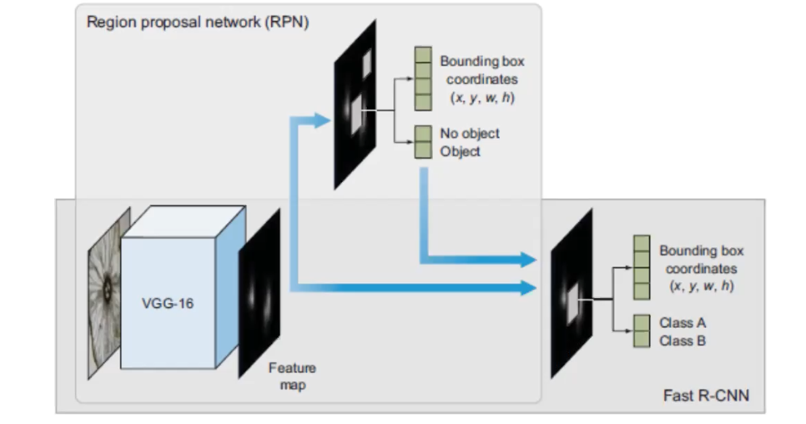

Applications of CNNs in Computer Vision
Acknowledgement: This course (CSCI 8980) is being offered by Prof. Ju Sun at the University of Minnesota in Fall 2020. Pictures of slides are from the course. The content of this blog is from one of the grad students in the class, Andrea Walker, who were giving a presentation.
Object Detection
What is object detection?
There are 2 main tasks:
- Localizing one or more objects in the image
- Classifying each object in the image

Credit: The image above is from Islam el al., 2019.
Object Detection Network

The image above is from Stanford CS231N. The inputs here are a image and a bounding box which contains the object, and the outputs here are a classification score of multiclass and a bounding box of the classified object. Since after the CNN conponent, there are two fully connected layers to output two different outcomes respectively. Here the obejctive loss we use is simply add the loss of both tasks together. I believe you’re familair with the softmax loss as it’s used in handwritten digit recognition in MNIST, and notably the localization here can be treated as a regression problem so that we can use the L2 loss.
Multiple Objects
In the example above, we only have one object (a cat) in the image. What if we have multiple objects in the image? If we have one more object in the images, in the input we will have one more class label with four values to indicate another bounding box, here we see that the program starts to scale once we have multiple obejcts in a image.
A simple solution to multiple obejcts could be a slicing window over the entire image, which means we apply a CNN to many different crops of the image and then CNN classifies each crop as object or background. However, this is very computationally expensive! Most of the object detection application require this to be happened in the real time. So, what can be a good solution to multiple obejcts?
4-step object-detection framwork
1. Region Proposal: indentify regions of interest (RoI) for potential locations of objects
- General procesures for region proposal:
- Generate thousands of bouding boxes
- Classify them as forground or background based on ‘objectness score’
- Pass only foreground through rest of the network
People commonly use selective search, which is a fast algorithm, ~200 region proposals in a few seconds on CPU

The images under this entire section are from Elendy, 2020.
Selective Search
Selective search is a greedy search algorithm. The following are the steps of selective search.
- Segmentation. It basically defines the ‘blobs’ within the image in the segmentations step that can potentially be objects.
 - Take these proposed regions that may contain objects as input, and the output will be as the image shown below. Those blue boxes are the regions that may contain a object, and the algorithm combines the two similiar regions into one region. So, after many iteration we’ll find we have less blue boxes now. This step will continue until the entire object is in a bounding box.

2. Feature Extraction: extract visial features within each RoI for classification
- Use a pretrained CNN network, and extract features
- Make 2 predictions using additional layers:
- Bounding box prediction (x, y, width, height) You may be curious why we have to make a prediction of bounding boxes here, since we’ve already identify a region of interest in the previous step. It’s important for the network to predict a bounding box, because we’re interested in having a bounding box that predicts the optimal bounding box for the obejct that we’re detecting. The region of interest may not include the entire obejct, so we don’t want to be limited by that.
- Class prediction (softmax function predicting the class probability for each object)
3. Non-maximum Suppression (NMS): avoid repeated detections
There is a 4-step technique for eliminating duplicate detections of objects.
- Discard bounding boxes with prediction below a confident threshold.
- Select the bounding boxes with the highest probability
- Calculate the overlap of all remaining boxes with the same class prediction
- Supress any box with an IoU smaller than a threshold (NMS threshold, usually 0.5).

4. Evaluateion metrics: evaluate performance of model
Once an object detector has been developed, it’s typically evaluated using two main metrics:
- Frames per second (FPS) - detection speed
- Mean Average Precision (mAP) - network precision
- mAP calculated from a bounding box’s object score and the precision-recall curve
State of the Art Object Detection CNNS
R-CNNs: Region-based CNNs
R-CNN family networks:
- R-CNN
- Fast-RCNN
- Faster-RCNN (SOTA)

R-CNN starts with a selective search to extract regions of interest (RoI) and wrapped them, then pass through a pretrain CNN to extract featrues. Once the feature extraction has been completed, classification and regression are performed to identify the class within each RoI as well as the bounding box. In order to understand this pipeline better, let’s look at R-CNN in a different angle.

Each region that pass through selective search will be sent to CNN to extract the featuers, and then the features will be passed to two modules – classification module, which is a support vector machine (SVM) and a regression module, which is a regerssor that estimate the bounding box. This is the base level of the family of R-CNNs.

The image above is Fast-RCNN. The major change is where the CNN appears in the architecture. This time the input image will be directly sent into the CNN, and the region extractor happens after the CNN. This is important, because it speed up the network by only running one CNN instead of runnign ~2000 CNNs on each RoI.
CNN here performs both classification and feature extraction, and the SVM classification module is replaced with a softmax layer.

The image above is Faster-RCNN, and it reaches the SOTA performance. Its overal architectural design is similiar with Fast-RCNN, with the exceptionthat a different algorithm is used for region proposal. I used the same base CNN to do the feature extraction, the main change is that they created a region proposal network (PRN), this plays the role of the selective search algorithm. So, it’s really taking out the selective search algorithm from Fast-RCNN and replace it with PRN.